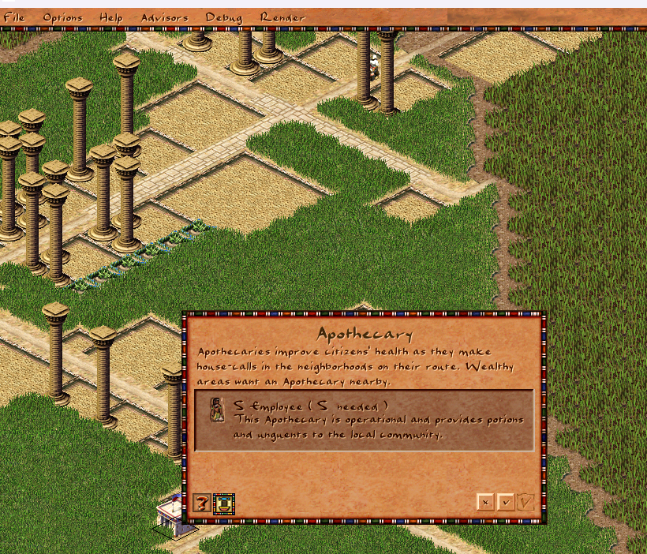

Overlays Become Script-Declared

Last month the overlay menu moved to script. This time the overlays themselves follow. A city overlay — the data that says which walkers and buildings light up, which column type is drawn, and how tooltips read — can now be declared entirely in JavaScript with an [es=city_overlay] block, instead of requiring a hand-written C++ slot. The Apothecary health overlay is the first one migrated, and it now lives in its own overlays/apothecary.js.
What Changed
- A new entity-system registry,
city_overlay_js_registry.cpp, scans for[es=city_overlay]declarations and registers each into the engine's overlay slot table after config load - The per-overlay C++ instance is gone —
city_overlay_apothecary.cpp(justcity_overlay_t<OVERLAY_APOTHECARY> g_city_overlay_apothecary;) was deleted - Apothecary's declaration and its tooltip / column-height handlers moved out of the monolithic
overlays.jsinto a dedicatedoverlays/apothecary.js, pulled in withimport overlays.apothecary es_nameis no longer a serialized config field; the registry sets it programmatically from the declaration name- Handlers now write results through the new
city.overlay_tooltipandcity.overlay_column_heightproperty setters instead of calling__city_overlay_set_*bindings directly
Before: A C++ Slot per Overlay
Every overlay needed a translation unit whose only job was to instantiate a typed slot:
// city_overlay_apothecary.cpp
city_overlay_t<OVERLAY_APOTHECARY> g_city_overlay_apothecary;
The data (walkers, buildings, column type, animation) was already in overlays.js, but the slot lived in the binary. Adding an overlay meant a new .cpp file and a recompile, and the script and engine sides had to be kept in lock-step by hand.
After: Declared in Script
The overlay is now a plain script declaration. The registry reads the named config section, validates the id against the overlay enum, allocates a city_overlay, fills it from the archive, stamps es_name, and drops it into the slot table — refusing duplicates and unknown ids along the way.
[es=city_overlay]
overlay_apothecary {
id: OVERLAY_APOTHECARY
title: "#overlay_apothecary"
walkers: [FIGURE_HERBALIST]
buildings: [BUILDING_APOTHECARY, BUILDING_ROADBLOCK],
column_type: COLUMN_TYPE_POSITIVE
column_anim: {pack:PACK_GENERAL, id:103}
}The tooltip and column-height logic stays right next to the declaration, now reading and writing through city properties so the binding surface is uniform with the rest of the script API:
[es=(overlay_apothecary, get_column_height)]
function apothecary_building_column_height(ev) {
var house = city.get_house(ev.bid)
if (!house || house.population <= 0) {
city.overlay_column_height = -1
return
}
city.overlay_column_height = house.apothecary / 10
}On script reload the registry clears the slots it owns and rebuilds them, so the hot-reload workflow applies to overlays just like it already does for building windows and the overlay menu.
Why This Matters
Overlays are now fully data-driven from script: their slot, their data, and their tooltip/column behaviour all live in one self-contained JS file. A modder can add a custom overlay for a new building type without adding a C++ file or recompiling the engine — declare it, write two handlers, press F5. Apothecary is the template; the remaining built-in overlays can migrate the same way, one file at a time.